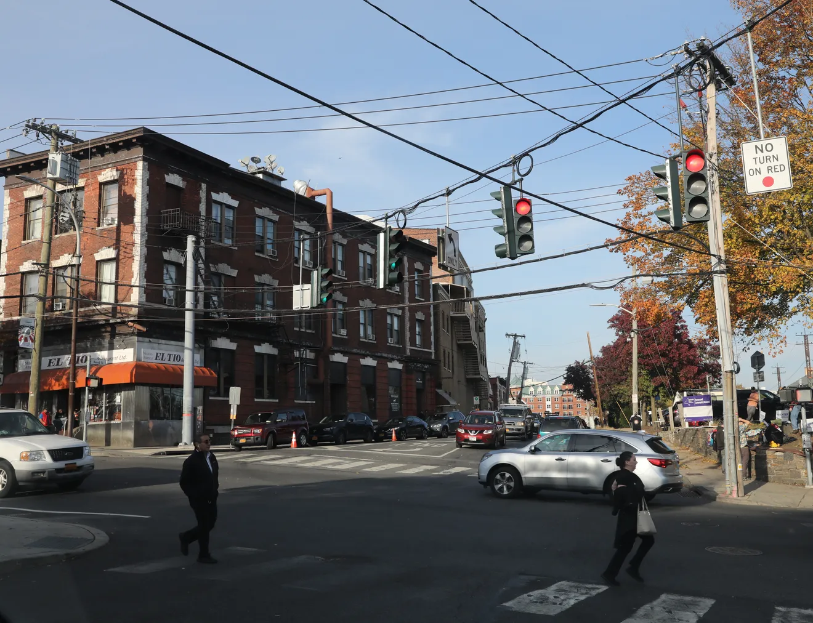

Video Resource
Hear more about X-S Hair Salon, owned by two sisters and their mother who immigrated to this country, and their fight against the developers of Tarry Lighthouse. Also hear more about how the developers forced other small businesses on that block to leave
Article Resources
Hear more about X-S Hair Salon, owned by two sisters and their mother who immigrated to this country, and their fight against the developers of Tarry Lighthouse. Also hear more about how the developers forced other small businesses on that block to leave
space

Read from someone who lives in town and their first hand experience with the changes and development around town.